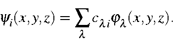

Next: Bonds
Up: Theory
Previous: Electron density
Molecular orbitals can be generated by calculating the function

Note that molecular orbitals are expressed in intensity, not density.
The intensity of a M.O. is its instantaneous value. This should not
be confused with, e.g., electrons per cubic Ångstrom.
Except for very simple cases, such as the bonding M.O. in H2, this function
will have both positive and negative regions.
J. J. P. Stewart
Fujitsu Ltd. 2001